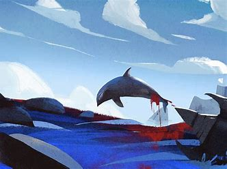

《海底两万里》是法国著名科幻小说家儒勒.凡尔纳的代表作》。 凡尔纳，法国科幻、探险小说家，被誉为“科幻小说之父”。1863年起，他开始发表以科学幻想和冒险为主的小说作品，以总称为《在已知和未知的世界中的奇异旅行》的系列作品集一举成名。凡尔纳一生著作颇丰，代表作有《海底两万里》《格兰特船长的儿女》《气球的五个星期》等。
书评｜《海底两万里》：没有做不到，只有想不到的
它讲述的故事发生在1866年，那时有一件大怪事发生，就是海洋中突然出现了一个庞然大物。 为了“把那个怪物从海洋中清除出去”，法国生物学家阿龙纳斯登上了驱逐舰。 在驱逐的过程中，阿龙纳斯和他的仆人康塞尔不慎掉入水中，却因此意外游到了“怪物”的背脊上。 原来，这个“怪物”是一艘不为世人所知的潜水艇，名为“鹦鹉螺”号。
潜艇艇长尼摩发现他们二人后，为了保守这艘潜水艇的秘密，将二人困在艇内，而阿龙纳斯就此开始了周游各大洋的旅程。 他们几乎行遍七大洲四大洋，和鱼群竞赛、漫步海底森林、穿越海底隧道、探秘失落古城亚特兰蒂斯、欣赏无价大珍珠、探秘南极、勇斗大章鱼…… 十个月后，他们逃出了潜水艇，生物学家阿龙纳斯将海底的秘密公之于众。
——奇妙精彩的海底世界——
“我的心还在这个国家，并且，直到我最后一口气，我的心也是在这个国家！”
——人生是美好的，又是短暂的。有的人生寂寞，有的人生多彩，不同的人有着不同的人生追求;人生是一条没有回程的单行线，每个人都用自己的所有时光前行。……
——但愿所有的仇恨都在这颗倔强的心中平息——
"但未来仍是有希望的，当这世界准备迎接，一个全新的，更好的生活时，所有这一切也将成为过去，在将来的某一天。”
组长: 陈刚 策划：梅卓航 执行人:王鑫圆、邹剑波